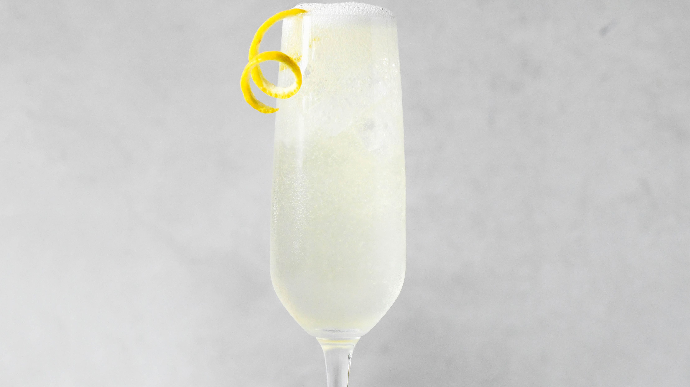

How to Make a French 75

Description
A French 75 is a wonderfully refreshing cocktail that balances sweet and sour in a delightful way. Served in a champagne flute, this cocktail is sure to be a hit at every function.
Ingredients and Tools
- Champagne Flute
- Cocktail Shaker
- Strainer
- Lemon Peeler
- Ice
- Gin
- Simple Syrup
- Lemon Juice
- Lemon
- Sparkling Wine
Steps
- Pour 1 oz of gin into your cocktail strainer.
- Pour 1 oz of lemon juice into your cocktail strainer.
- Pour half an oz of simple syrup into your cocktail strainer.
- Fill shaker 3/4 of the way with ice, put the top on and shake vigorously for 7-8 seconds.
- Take the top off the shaker, place the cocktail strainer on top of the shaker and strain the cocktail into the champagne flute.
- Top with sparkling wine and garnish with a twist of lemon peel. Enjoy!